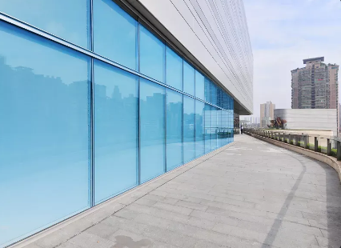

SEJA BEM VINDO(A)!
SEJA BEM VINDO(A)!
A Silva's Informática tem como missão fornecer soluções inovadoras e eficientes em tecnologia da informação, visando otimizar os processos e impulsionar o crescimento de seus clientes. Comprometemo-nos em oferecer produtos e serviços de alta qualidade, sempre alinhados com as últimas tendências do mercado, proporcionando assim a satisfação plena de nossos clientes.
Buscamos ser reconhecidos como líderes no setor de tecnologia da informação, destacando-nos pela excelência em produtos e serviços. Nossa visão inclui a constante evolução e adaptação às mudanças tecnológicas, garantindo que a Silva's Informática seja sempre uma referência inovadora no mercado, contribuindo para o desenvolvimento sustentável de nossos clientes e parceiros.
Aliquam iaculis interdum Aliquam iaculis interdum aliquet. Proin tincidunt, massa ut maximus euismod, velit nisl euismod risus, non laoreet massa turpis eget sapien. Mauris vehicula non metus vitae interdum. Nulla cursus metus at arcu pharetra, eget maximus mi hendrerit. Ut vulputate odio quis volutpat tincidunt. Cras ut molestie metus. Nam lacinia mauris ac quam consectetur vulputate. In finibus blandit cursus. Aliquam pharetra mollis neque, id egestas ligula pharetra non. Donec dictum diam ut nunc pretium venenatis. Donec et leo eros. Pellentesque fermentum mauris quis commodo rhoncus. Proin in volutpat eros, eget molestie nisi. Pellentesque habitant morbi tristique senectus et netus et malesuada fames ac turpis egestas. Maecenas id turpis nec mi ullamcorper maximus eu sed risus. Pellentesque imperdiet justo urna, in volutpat orci tempus sit amet.Aliquam iaculis interdum aliquet. Proin tincidunt, massa ut maximus euismod, velit nisl euismod risus, non laoreet massa turpis eget sapien. Mauris vehicula non metus vitae interdum. Nulla cursus metus at arcu pharetra, eget maximus mi hendrerit. Ut vulputate odio quis volutpat tincidunt. Cras ut molestie metus. Nam lacinia mauris ac quam consectetur vulputate. In finibus blandit cursus. Aliquam pharetra mollis neque, id egestas ligula pharetra non. Donec dictum diam ut nunc pretium venenatis. Donec et leo eros. Pellentesque fermentum mauris quis commodo rhoncus. Proin in volutpat eros, eget molestie nisi. Pellentesque habitant morbi tristique senectus et netus et malesuada fames ac turpis egestas. Maecenas id turpis nec mi ullamcorper maximus eu sed risus. Pellentesque imperdiet justo urna, in volutpat orci tempus sit amet.aliquet. Proin tincidunt, massa ut maximus euismod, velit nisl euismod risus, non laoreet massa turpis eget sapien. Mauris vehicula non metus vitae interdum. Nulla cursus metus at arcu pharetra, eget maximus mi hendrerit. Ut vulputate odio quis volutpat tincidunt. Cras ut molestie metus. Nam lacinia mauris ac quam consectetur vulputate. In finibus blandit cursus. Aliquam pharetra mollis neque, id egestas ligula pharetra non. Donec dictum diam ut nunc pretium venenatis. Donec et leo eros. Pellentesque fermentum mauris quis commodo rhoncus. Proin in volutpat eros, eget molestie nisi. Pellentesque habitant morbi tristique senectus et netus et malesuada fames ac turpis egestas. Maecenas id turpis nec mi ullamcorper maximus eu sed risus. Pellentesque imperdiet justo urna, in volutpat orci tempus sit amet.
Aliquam iaculis Aliquam iaculis interdum aliquet. Proin tincidunt, massa ut maximus euismod, velit nisl euismod risus, non laoreet massa turpis eget sapien. Mauris vehicula non metus vitae interdum. Nulla cursus metus at arcu pharetra, eget maximus mi hendrerit. Ut vulputate odio quis volutpat tincidunt. Cras ut molestie metus. Nam lacinia mauris ac quam consectetur vulputate. In finibus blandit cursus. Aliquam pharetra mollis neque, id egestas ligula pharetra non. Donec dictum diam ut nunc pretium venenatis. Donec et leo eros. Pellentesque fermentum mauris quis commodo rhoncus. Proin in volutpat eros, eget molestie nisi. Pellentesque habitant morbi tristique senectus et netus et malesuada fames ac turpis egestas. Maecenas id turpis nec mi ullamcorper maximus eu sed risus. Pellentesque imperdiet justo urna, in volutpat orci tempus sit amet.Aliquam iaculis interdum aliquet. Proin tincidunt, massa ut maximus euismod, velit nisl euismod risus, non laoreet massa turpis eget sapien. Mauris vehicula non metus vitae interdum. Nulla cursus metus at arcu pharetra, eget maximus mi hendrerit. Ut vulputate odio quis volutpat tincidunt. Cras ut molestie metus. Nam lacinia mauris ac quam consectetur vulputate. In finibus blandit cursus. Aliquam pharetra mollis neque, id egestas ligula pharetra non. Donec dictum diam ut nunc pretium venenatis. Donec et leo eros. Pellentesque fermentum mauris quis commodo rhoncus. Proin in volutpat eros, eget molestie nisi. Pellentesque habitant morbi tristique senectus et netus et malesuada fames ac turpis egestas. Maecenas id turpis nec mi ullamcorper maximus eu sed risus. Pellentesque imperdiet justo urna, in volutpat orci tempus sit amet. interdum aliquet. Proin tincidunt, massa ut maximus euismod, velit nisl euismod risus, non laoreet massa turpis eget sapien. Mauris vehicula non metus vitae interdum. Nulla cursus metus at arcu pharetra, eget maximus mi hendrerit. Ut vulputate odio quis volutpat tincidunt. Cras ut molestie metus. Nam lacinia mauris ac quam consectetur vulputate. In finibus blandit cursus. Aliquam pharetra mollis neque, id egestas ligula pharetra non. Donec dictum diam ut nunc pretium venenatis. Donec et leo eros. Pellentesque fermentum mauris quis commodo rhoncus.
